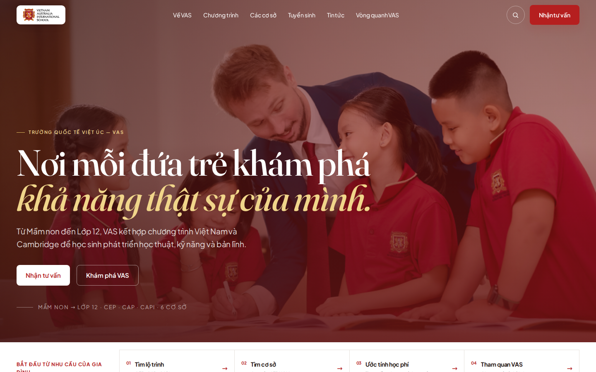
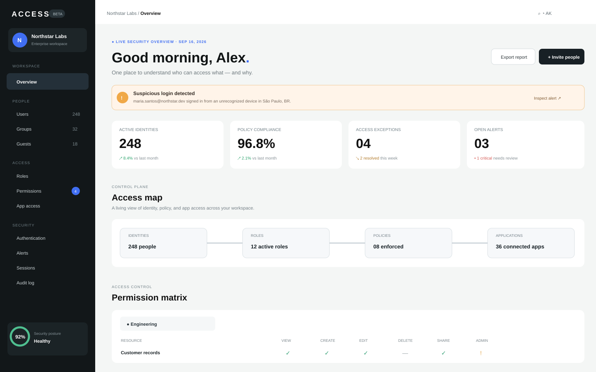
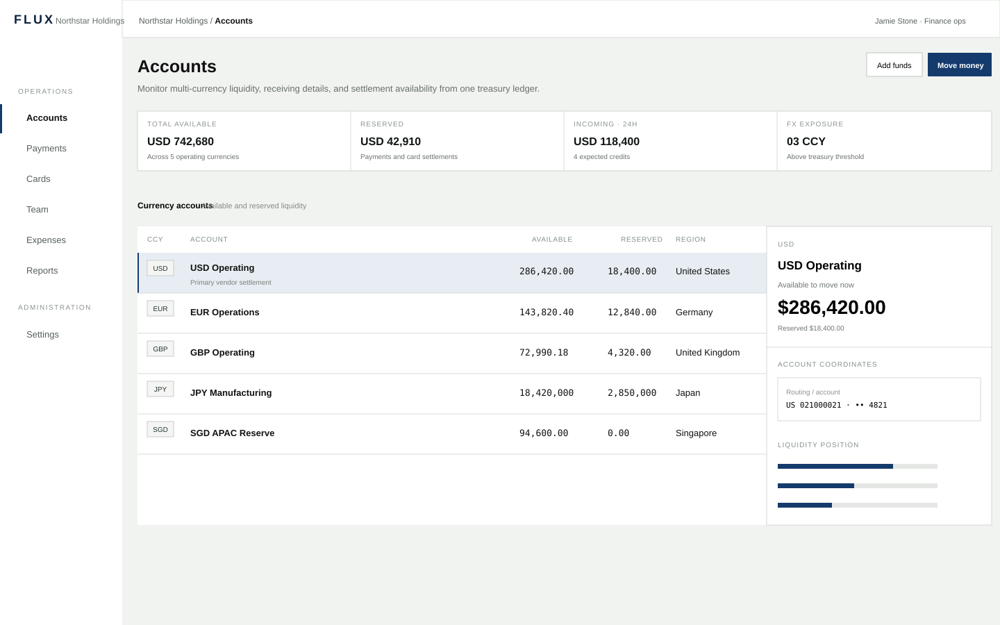
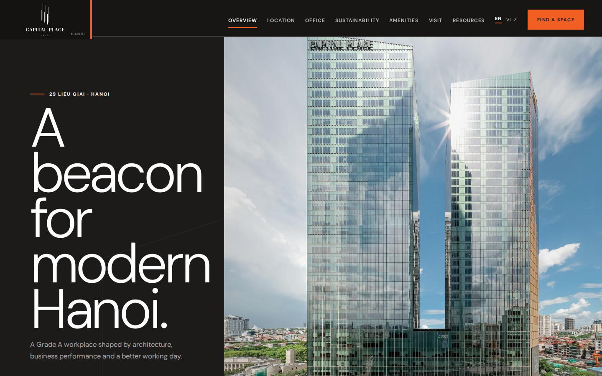

IA · Education · ResponsiveVAS Education
Reframing a large school website from an information archive into a parent decision journey.
Open to UI/UX · Product · Web DesignI turn ambiguous requirements, dense content and complex workflows into clear product decisions, responsive interface systems and working prototypes teams can actually inspect.
I do not start with a visual trend. I start with the decision a user or team needs to make, then build the structure, system and interaction that make that decision easier.
Audience, task, constraints and page roles come before surface polish. Redesign should change how the product works, not only how it looks.
Tokens, components, states and responsive rules become one contract so the interface can scale without losing intent.
Working HTML/CSS/JS exposes content, layout and interaction problems that a static frame can hide.
Browser evidence, accessibility checks and visual critique decide whether a design is actually finished.

IA · Education · ResponsiveReframing a large school website from an information archive into a parent decision journey.
 Product · Dashboard · System
Product · Dashboard · SystemA dense product interface exploring structured navigation, operational hierarchy and information-rich dashboards.

Access · Product UXA product concept focused on clear states, hierarchy and decision support inside a compact operational interface.
 Security · Monitoring · UX
Security · Monitoring · UXA monitoring-oriented interface emphasizing status visibility, prioritization and fast scanning under information pressure.

Workflow · Interaction · SystemA workflow-focused concept built around compact controls, interaction feedback and a disciplined component language.

Decision support · Real estateMoving commercial real estate from brochure browsing toward leasing decision support.
Translated business requirements into IA, user flows, responsive UI systems and implementation-ready interaction states for client-facing web projects.
Designed user flows, wireframes and high-fidelity interfaces while defining interaction states, edge cases and clearer developer handoff.
Supported responsive product flows, reusable UI patterns and implementation-oriented design handoff.